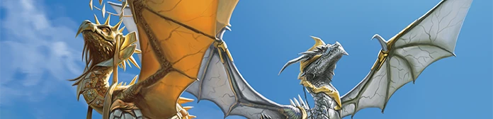

《Battlezoo先祖：巨龙 (5E)》 是由顶级第三方工作室 Roll For Combat 出品的 D&D 5E 官方认证扩展规则集。本书彻底颠覆了“巨龙只能作为怪物或坐骑”的传统范式，利用严谨而平衡的 永恒之光仪式（Lux Aeterna），允许玩家从 1 级开始完整扮演一条真正的巨龙！
本书完整囊括了 45 种巨龙先祖血统、一套完整的 巨龙先祖职业（1~20级）、两大专精范型（巨龙蹂躏者 与 巨龙法师）、巨龙进化选项、全量龙之馈赠，以及极具风味的 力量宝库 升级机制。
主创设计： Stephen Grodziski, Mark Seifter
5E 规则开发： Mark Seifter, Stephen Grodziski
插画艺术总监： Stephen Grodziski
出版商： Roll For Combat, Skirmish Games LLC
中文本地化： Foundry VTT 社区与 5e 不全书技术管线